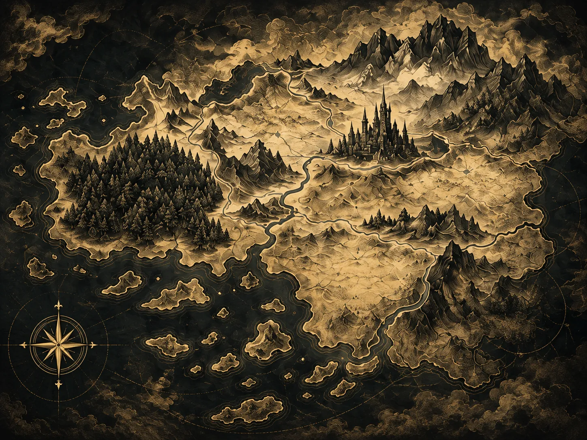
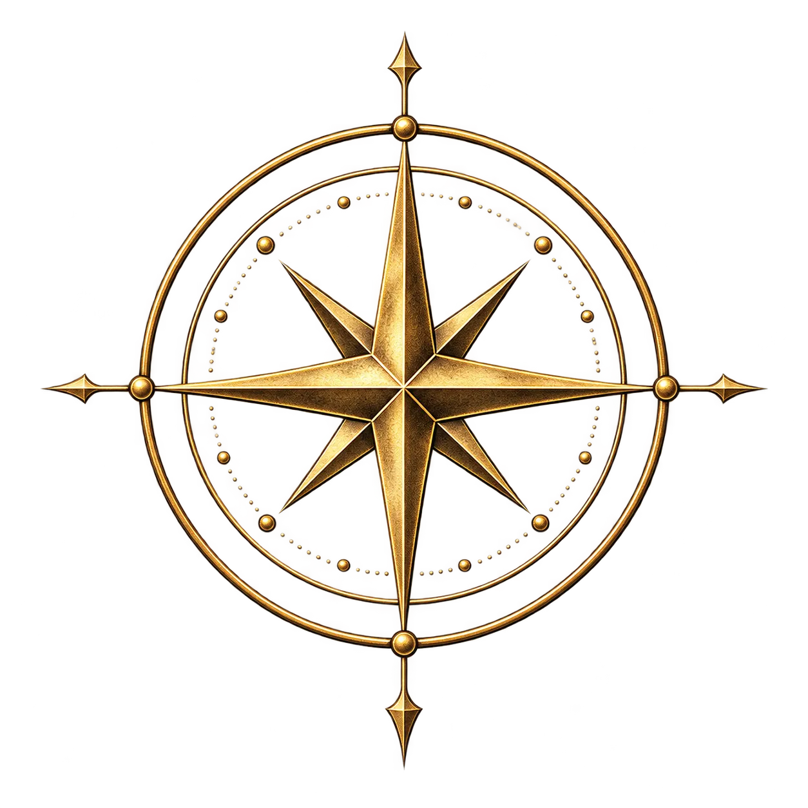

Année zéro
La création du Voile
Cinq mages fondateurs refermèrent la faille et placèrent les Pierres du Cœur en des lieux sacrés à travers le continent.
Chaque coin a une histoire. Chaque forêt porte un nom.
Explorez les terres mystérieuses et découvrez les secrets cachés de Terraform.
La carte interactive est disponible dans le jeu

Il y a mille ans, les mages fondateurs créèrent le Voile — un bouclier invisible séparant le monde des vivants du Néant. Le Voile repose sur cinq Pierres-Cœurs, dispersées à travers les terres de Terraform. Mais les pierres commencent à s’éteindre.
Trois des cinq sont déjà silencieuses. Là où les Cœurs se sont tus, l’espace est devenu fragile : des créatures du Néant s’infiltrent à travers les fissures, tandis que le temps s’écoule différemment. De vieilles cités s’enfoncent dans un brouillard dont personne ne revient.
Les Gardiens du Voile — l’Ordre des Cinq Doigts — se sont désintégrés après une hérésie interne. Les survivants de l’ordre recherchent les derniers porteurs de l’Étincelle — des êtres capables de réveiller les Pierres une nouvelle fois.
Les événements clés de l'histoire de Terraform
Année zéro
Cinq mages fondateurs refermèrent la faille et placèrent les Pierres du Cœur en des lieux sacrés à travers le continent.
345e année
Les grandes cités de Terraform atteignent le sommet de leur puissance. La magie est accessible à tous ceux qui possèdent le talent.
612e année
L'hérésie du Mage Sans-Nom divise l'ordre. La première Pierre du Cœur s'éteint. Le Néant commence à s'infiltrer.
899e année
Deux pierres s'éteignent en une seule nuit. Un tiers des terres septentrionales est englouti par le Néant. Un grand exode des peuples commence.
1000e année — aujourd'hui
Vous vous réveillez dans les ruines du château ancestral. Le monde est au bord de son dernier crépuscule. Tout est entre vos mains.

Ironveil StudiosIronveil Studios est une équipe indépendante de 38 personnes, fondée en 2019. Nous croyons que les jeux vidéo sont un véritable art. Terraform est notre premier projet d'envergure, sur lequel nous travaillons depuis déjà cinq ans.
Nous puisons notre inspiration dans la littérature classique, l’architecture médiévale et la mythologie scandinave. Notre objectif est de créer un monde qui continue de vivre même après que vous avez éteint votre écran.
Le studio est basé à Paris, en France. Une partie de l'équipe travaille à distance depuis différents pays.